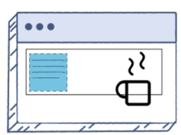
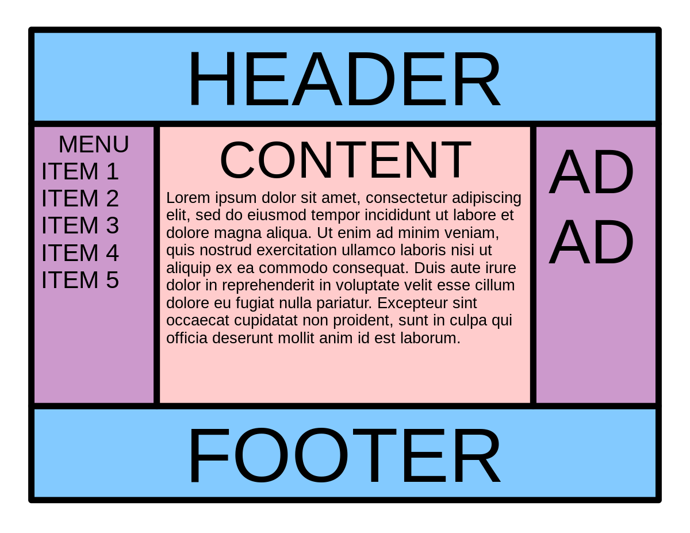

Holy Grail Layout in CSS
What is a box model in CSS. Give box-sizing property definition
The CSS box model represents the design and layout of each HTML element. It includes the content itself, padding around the content, a border surrounding the padding, and the margin outside the border. The box-sizing property defines how the width and height of the box are calculated.
What is a “clearfix hack” and when does it need to be applied
The 'clearfix hack' is a CSS technique used to prevent the parent container from collapsing when it has floated child elements. Without clearfix, the parent would not wrap the floated children and would appear as if it has no height.

What is a “margin collapse” and what are the use cases for margin: auto and negative margin values
Margin collapse occurs when two vertical margins come in contact, and instead of combining, they collapse into one margin, which is the larger of the two. 'margin: auto' is used to center elements, and negative margins can be employed to overlap elements or adjust layout in non-standard ways.

What was the problem with achieving Holy Grail layout
Historically, the problem with the Holy Grail layout was creating a two-column layout with header and footer, where both sidebars and the main content stretch to the height of the tallest column. It was challenging with older layout methods like floats.
What are the modern ways to achieve Holy Grail layout
Modern ways to achieve the Holy Grail layout include using Flexbox or CSS Grid, which provide more control over alignment, distribution of space, and sizing of boxes, without many of the hacks required in the past.